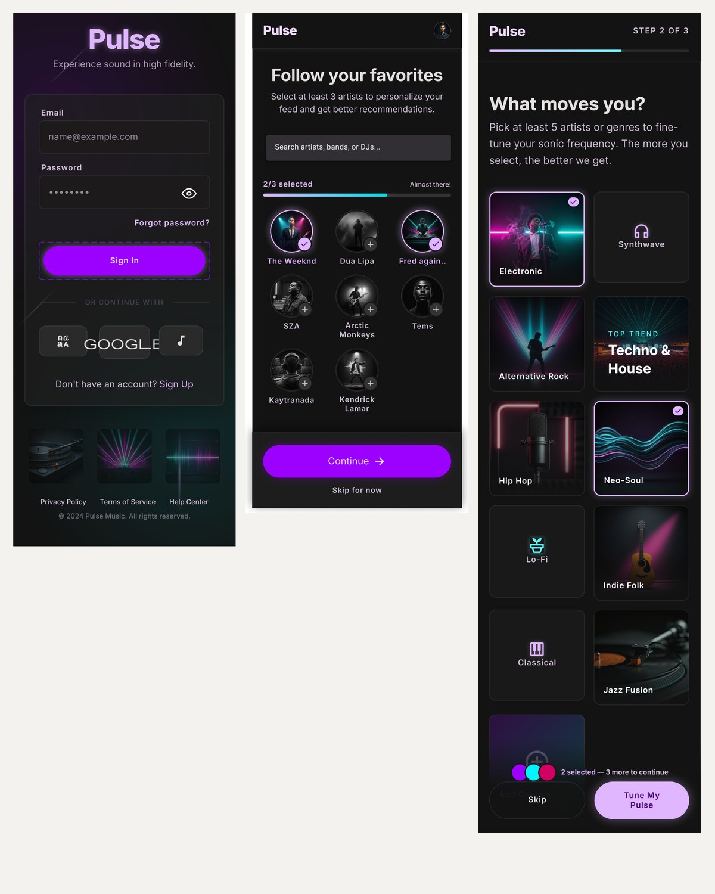
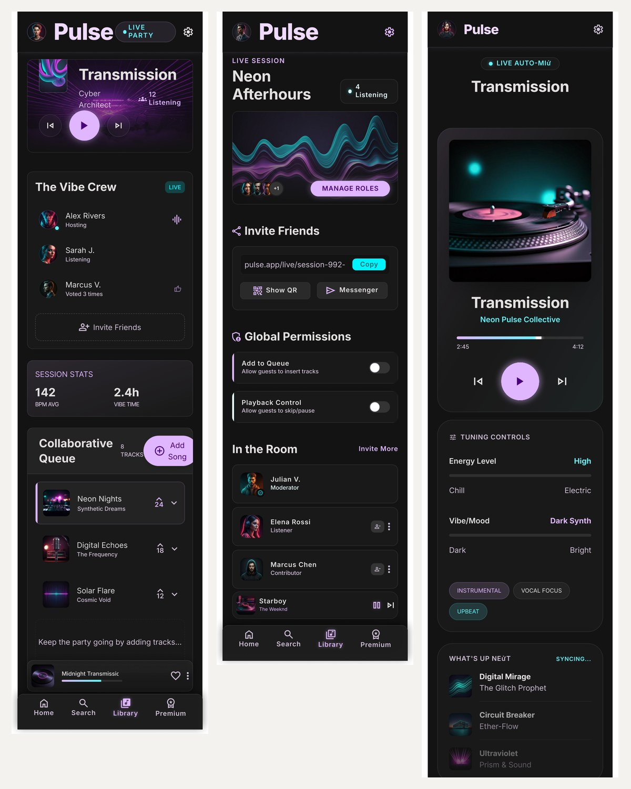
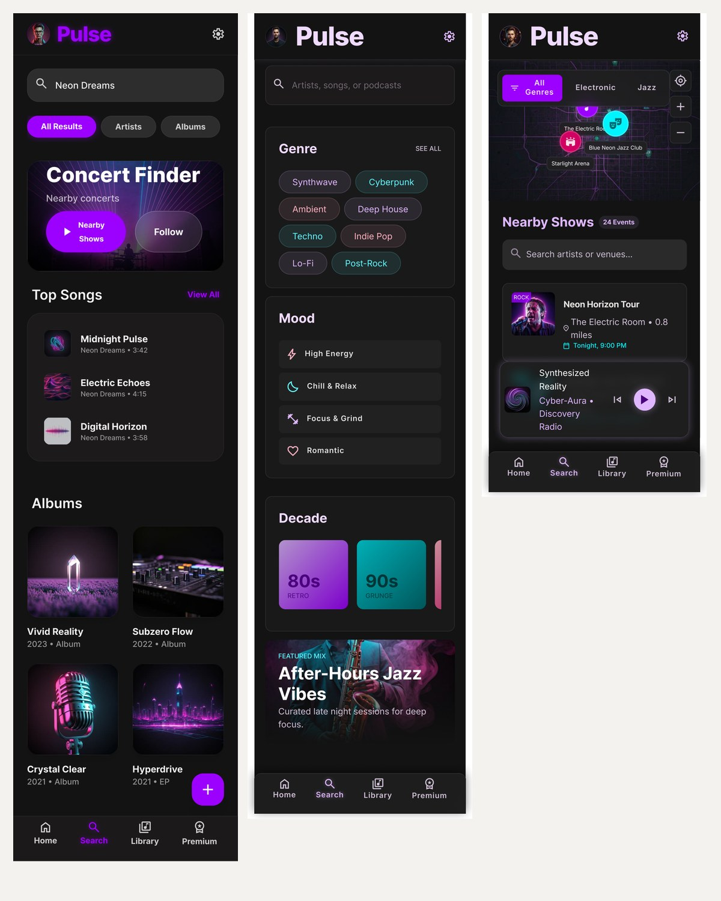
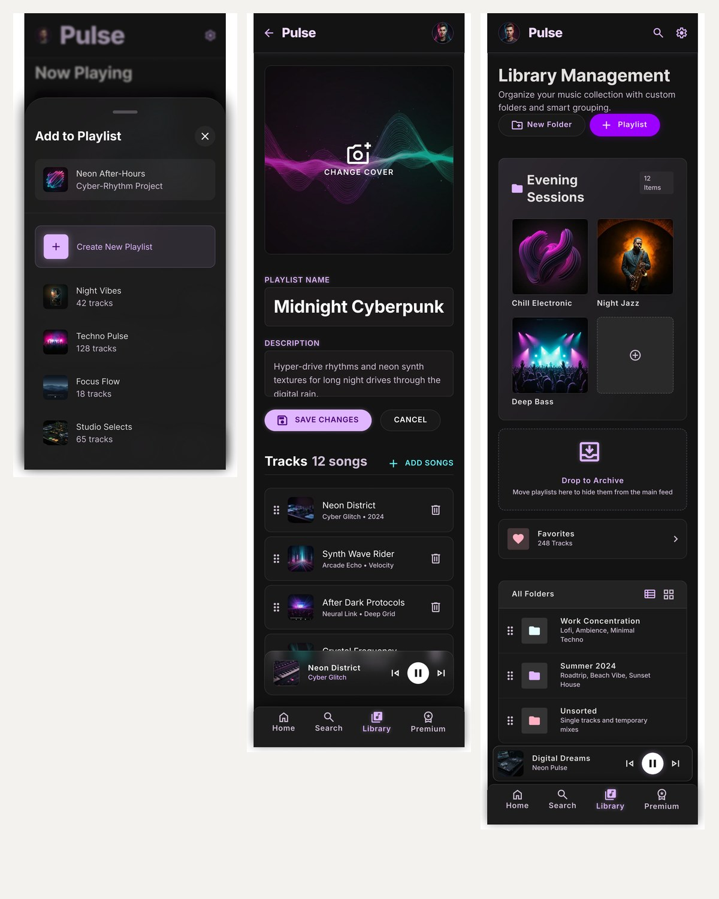
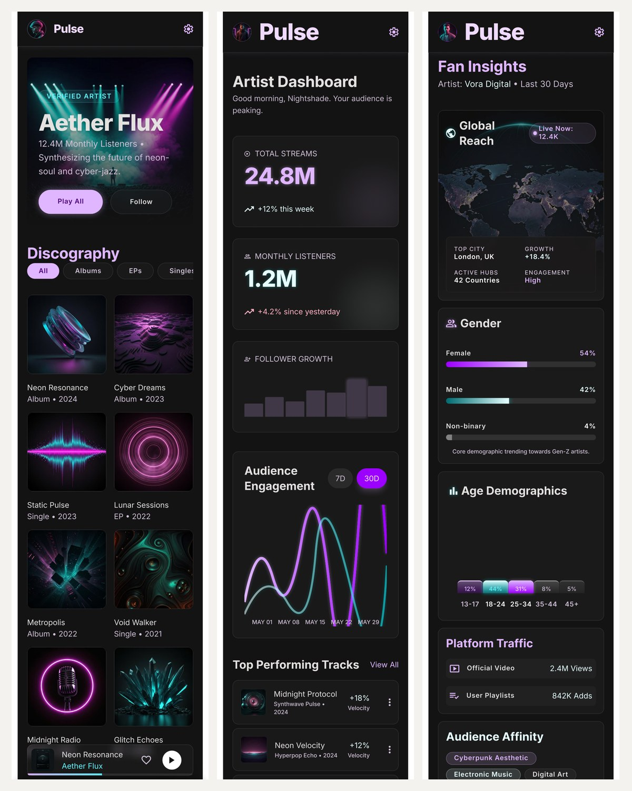
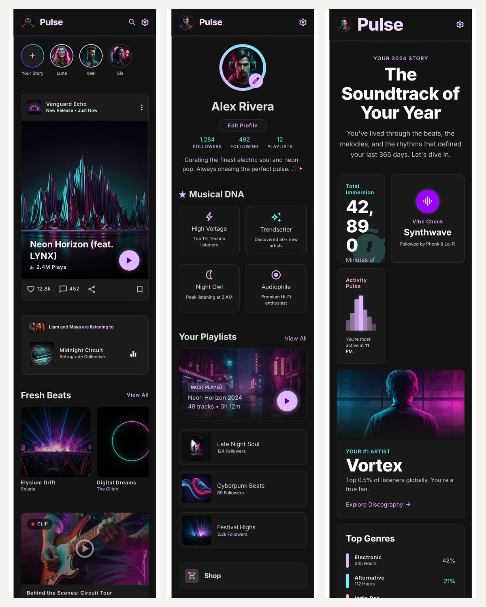
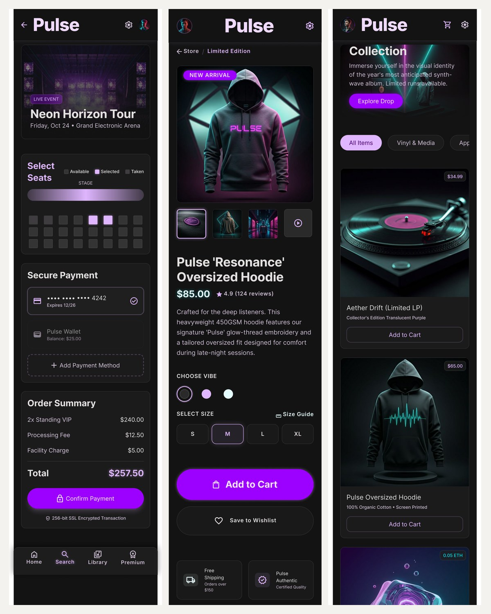
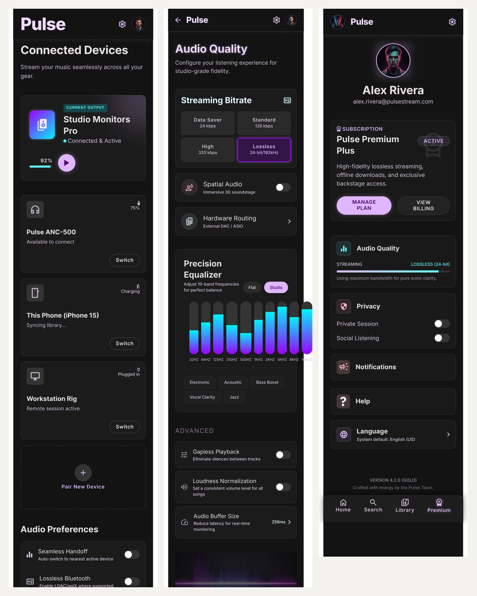

Work 01
Digital Media Technology — 2026
Music App
Pulse is a streaming app designed around listening together: live parties with a shared queue, artist dashboards, tickets and a store, all inside one dark shell. Built in Figma as a single component system across forty-four screens, with one type scale and a colour language of black, violet and cyan carrying every state.
Screens — 08 of 44








Colour
Black and violet carry the product; cyan is reserved for state — progress, copy confirmations, the current value on a slider. Measured from the screens.